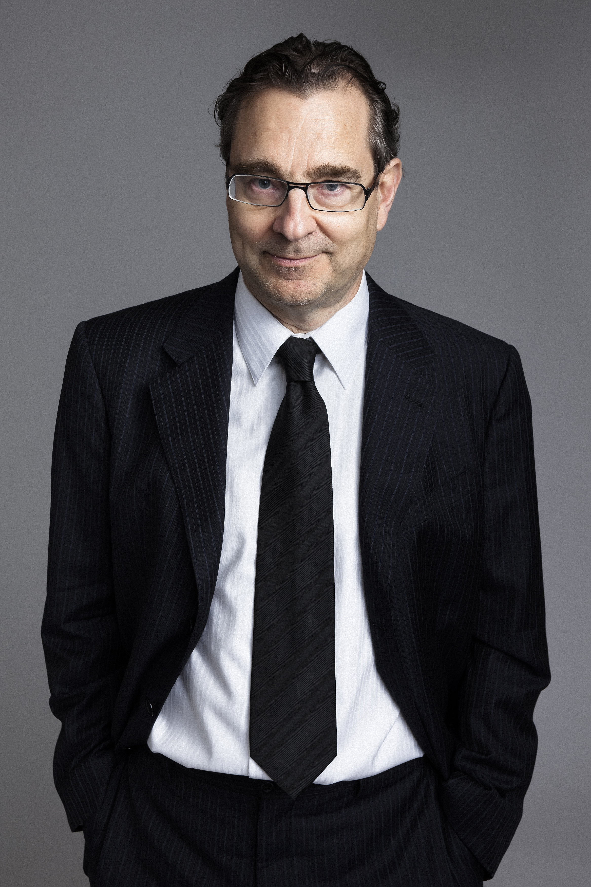
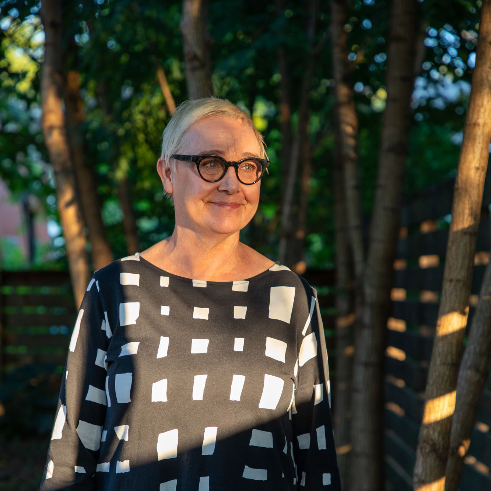
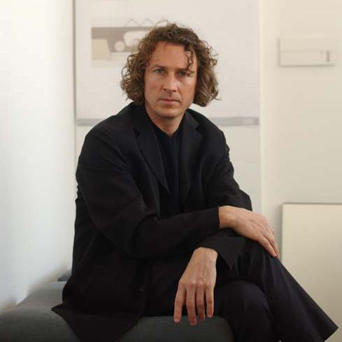
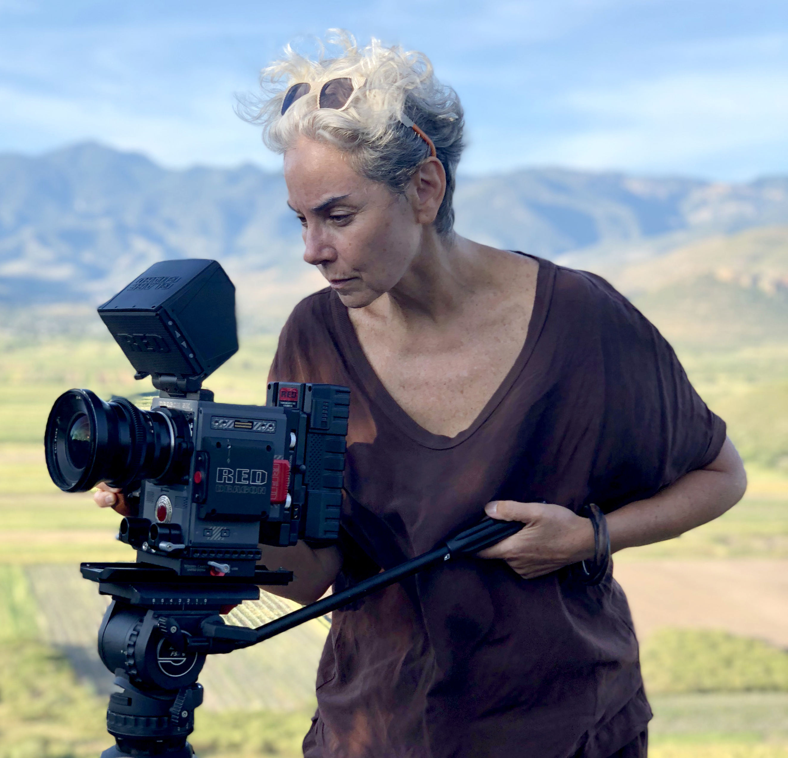

Design Culture Now
Cooper-Hewitt, National Design Museum 2 East 91st Street New York City

Erik Adigard | M.A.D.
Thursday, September 12 6:00 pm
Graphic designer Erik Adigard founded McShane Adigard Design (M.A.D.) in 1989. The firm has since designed Web sites, multimedia installations, and print publications for global clients, including Wired magazine.
Julie Bargmann | D.I.R.T. Studio
Tuesday, October 9 7:30 pm
Julie Bargmann founded D.I.R.T Studio, a landscape consultancy, in 1992. Recent projects include the landscaping of the Massachusetts Museum of Contemporary Art in North Adams, and Riverside Park South and the Hudson River Park in New York City.


Michael Gabellini | Gabellini Associates
Wednesday, November 2 6:00 pm
Michael Gabellini, a graduate of the Rhode Island School of Design, worked for Kohn Pedersen Fox Associates before founding his own practice in 1991. Recent projects include exhibitions for the Guggenheim Museum, the Marian Goodman Gallery, and the Council of Fashion Designers of America.
Rebeca Méndez | Méndez Communications
Thursday, December 4 6:30 pm
Rebeca Méndez, born and raised in Mexico City and trained at the Art Center College of Design in Pasadena, has designed publications for the Getty Center, the Los Angeles County Museum of Art, and the Whitney Museum of American Art.
